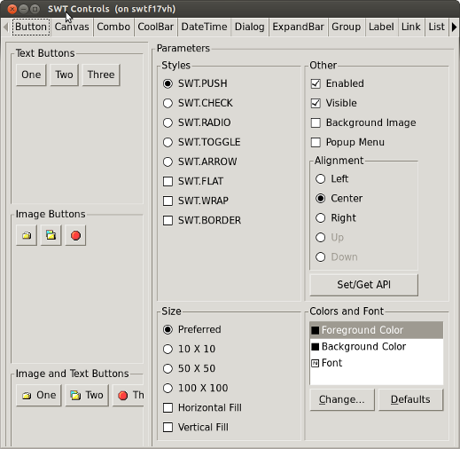
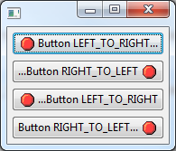
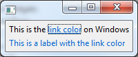

| SWT for GTK3 |
32-bit and 64-bit GTK3 have joined the lineup of supported configurations for which SWT and Eclipse are routinely built. This implementation is currently early access. Everyone is encouraged to download and test these new builds, and to log bugs in bugzilla.
Note to load the SWT GTK3 libraries, you must set an environment variable SWT_GTK3 prior to starting Eclipse. (ex. export SWT_GTK3=1)  |
| XULRunner on 64-bit Windows | The browser widget now supports the embedding of XULRunner on Windows x86_64. |
| BIDI Text Direction |
New API has been added to allow text direction to be set independent of the widget orientation. For more info see Snippet 364.
 |
| New SWT color constant for hyperlinks |
A new constant (SWT_COLOR_LINK_FOREGROUND) has been added that will return the native color of hyperlinks on all platforms.
 |